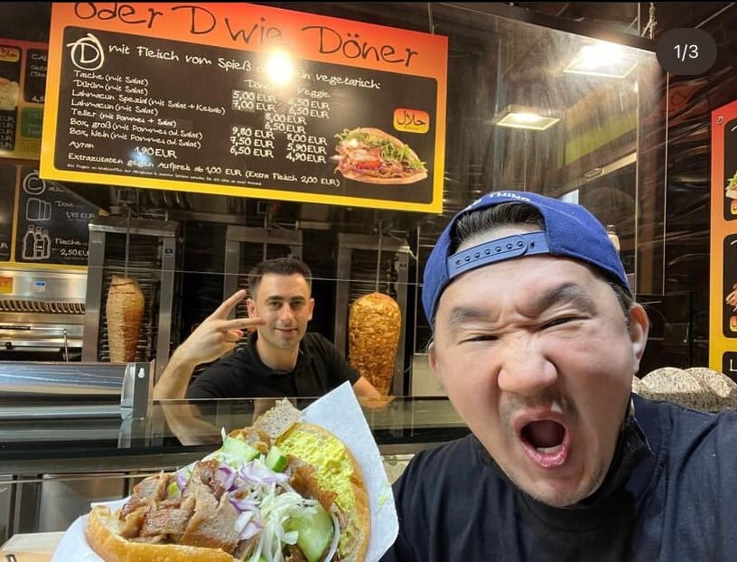
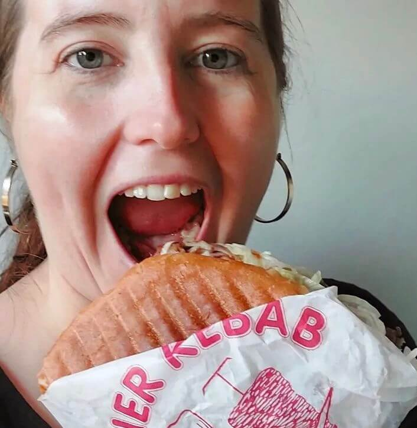
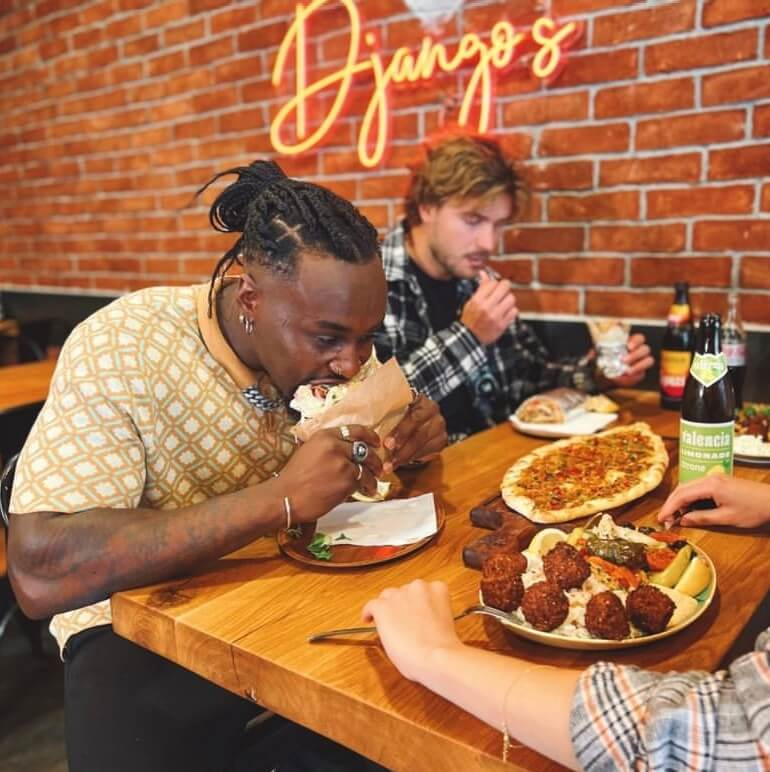
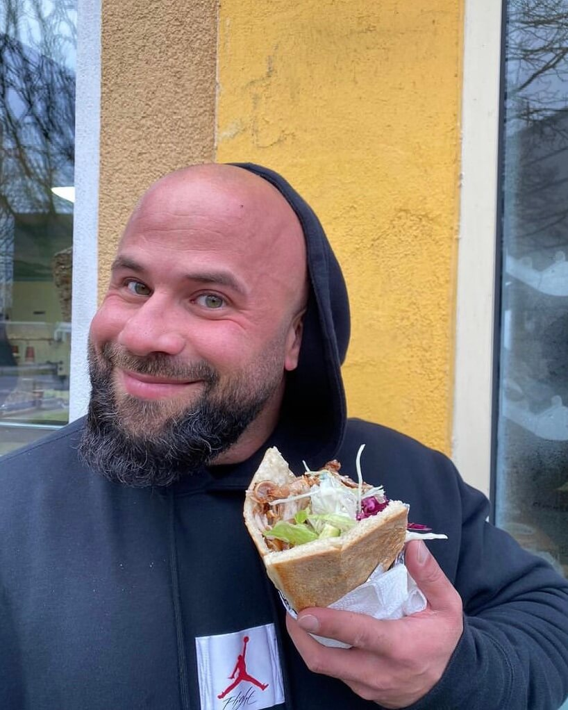

Döner macht schöner = Döner makes you beautiful Share the love with the hashtag #berlinerdönermachtschöner and your next Döner could be on us! Instagram: Renato Mattar Instagram: Pat The Expat  Instagram: Asahi Ueda  Instagram: Gwenda Schobert  Instagram: Djangos Instagram: Evren Gezer Instagram: Türkis - Oriental Food  Instagram: Ahmed Sharif Instagram: Jannis Baudelaire
Your Recommendations Do you have a favourite Döner spot? Got a hot new recommendation? Let us know the name and location and we will check it out. If we love it as much as you do, it will earn a spot on the Top 5 or Rising 5 lists. Name of the Döner Spot?* Where is the Döner Spot?* Döner Deals Save some cash on these insider deals, which are specially curated for you! Deal #1 Double Döner Thursdays Get two Döners for the price of one! You can choose between meat, vegetarian or vegan subject to availability at any of the Top 5 Döner places all day on Thursdays! Deal #2 Rüyam Family Deal Kids under 12 eat for free Bring your family anytime to Rüyam Gemüse Kebab in Prenzlauer Berg and your children will get a free Döner of their choice! Deal #3 Midnight Express Half price Döner at 00:00 Before exploring Berlin's iconic nightclubs, go and grab a Döner for half price at any of the Top 5 or Rising 5 Döner spots at midnight! 1 2 3 Get this Döner Deal
Your Recommendations Do you have a favourite Döner spot? Got a hot new recommendation? Let us know the name and location and we will check it out. If we love it as much as you do, it will earn a spot on the Top 5 or Rising 5 lists. Name of the Döner Spot?* Where is the Döner Spot?*
Döner Deals Save some cash on these insider deals, which are specially curated for you! Deal #1 Double Döner Thursdays Get two Döners for the price of one! You can choose between meat, vegetarian or vegan subject to availability at any of the Top 5 Döner places all day on Thursdays! Deal #2 Rüyam Family Deal Kids under 12 eat for free Bring your family anytime to Rüyam Gemüse Kebab in Prenzlauer Berg and your children will get a free Döner of their choice! Deal #3 Midnight Express Half price Döner at 00:00 Before exploring Berlin's iconic nightclubs, go and grab a Döner for half price at any of the Top 5 or Rising 5 Döner spots at midnight! 1 2 3 Get this Döner Deal

Deal #1
Double Döner Thursdays
Get two Döners for the price of one!
You can choose between meat, vegetarian or vegan subject to availability at any of the Top 5 Döner places all day on Thursdays!